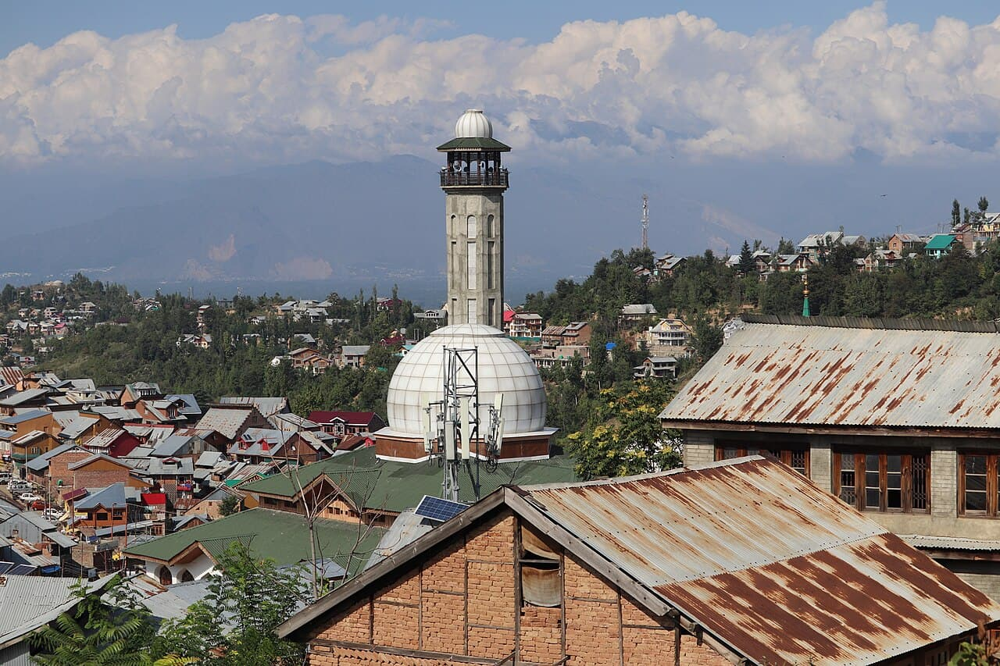

5 days · 4 nights · private proposal
Kashmir’s Sufi Shrines and Sacred Streets
A five-day Srinagar-based proposal with a separate Charar-e-Sharief day and room for prayer, local context and rest.
Price on request · current access and services to confirm
See the daily itinerary